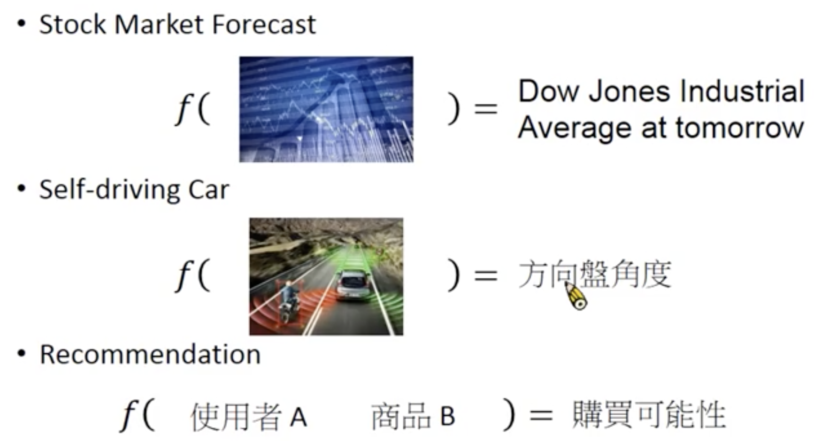

线性回归模型用于解决监督学习中的回归问题。例如：

1. 定义假设空间
f: 标签 = w * 样本 + b
公式中的参数w和b都是任意值（向量）。每一对确定的(w, b)都对应一个函数f。
所有的函数f构造了假设空间。
2. 定义损失函数
假设训练样本和真实样本符合IID（独立同分布），那么认为在训练样本上表现好的f在真实场景中也能表现好，因此用训练样本（中的测试集）作为损失函数的计算依据。
推断标签 = f(样本)
score = lossfunction(样本标签， 推断标签)
线性回归使用NMSE计算loss function，即：
score =
不同的f函数对得到不同的score，因此可以把求score的过程看作是关于f的函数：
score = L(f)
目标是要找到一个f，使得score最小：
3. 优化算法
目标是要找到f，怎么找到f是优化算法决定的事情。
回顾ML框架，并不是要一步到位直接找到f*。这是一个迭代的过程。每一次只需要找到一个比当前f好的f就可以了。
逻辑回归模型使用的是梯度下降法。
由上文可知，f由参数w和b决定，因此：
根据梯度定义可知，w和b应向它们的梯度的负方向移动。
假设当前w = w0, b = b0，令:
那么，其中是学习率。
Note：公式中的样本是一个矩阵，w， b, 标签都是向量。向量的求导是研究生数学中的内容。
4. 多项式回归
如果在假设空间中，只存在对样本特征的线性映射，则称为线性模型。但真实的样本特征和标签之间不一定是线性关系。
线性模型肯定表达不了非线性关系，那么这种情况下，即使是假设空间中最好的f，也很难拟合住数据。
解决方法：人为地添加非线性特征，例如x^2。
定义f：
样本标签 = w1 样本 + w2 (样本)^2 + ... + wm * (样本)^n + b
n取不同值，就是不同阶数的多项式回归算法。
每一种算法都构成了不同的假设空间。每一个假设空间里，都可以分别用优化算法从中找到一个最好的f。